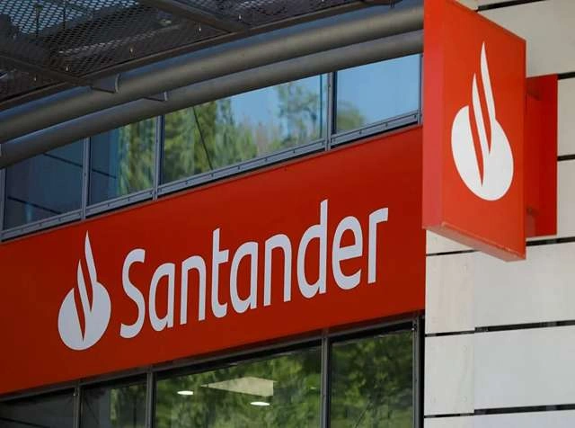

The British property market is seeing a notable shift this morning as HSBC and Santander lead a round of mortgage rate cuts across their main lending ranges. After several weeks of economic uncertainty and volatile swap rates, the move by these two high-street lenders is being seen as a turning point for the industry. Other banks and building societies are now expected to follow suit, particularly with the spring buying season picking up pace.

Major Lenders Pivot Toward Affordability
As of Friday,April 17, 2026,HSBC has reduced rates across a range of residential products,including both two-year and five-year fixed deals.Santander has focused its cuts on first-time buyer and home mover products.The moves reflect a calmer picture in financial markets, which has given lenders more room to compete on price. For borrowers who have been holding off due to higher rates in recent months, the reductions lower the threshold for what is now affordable.
A Turning Point for the British Housing Market
The timing will be welcomed by the many households approaching the end of fixed-term deals, who have been facing sharp increases in monthly repayments. Economists are broadly reading the cuts as a sign that the recent interest rate cycle has peaked. Greater mortgage affordability tends to feed through to higher consumer spending and a healthier housing market more broadly, so the implications stretch beyond borrowers alone.
Navigating the New Mortgage Landscape
Despite the positive news, financial advisers are urging borrowers not to be passive. The market remains exposed to shifts in the global economy, and the current window may not last. Buyers and existing homeowners are being encouraged to review their options now, as rates on offer today were out of reach only weeks ago. The industry's broader hope is that the moves by HSBC and Santander push the market toward a more stable and affordable footing through the rest of 2026.